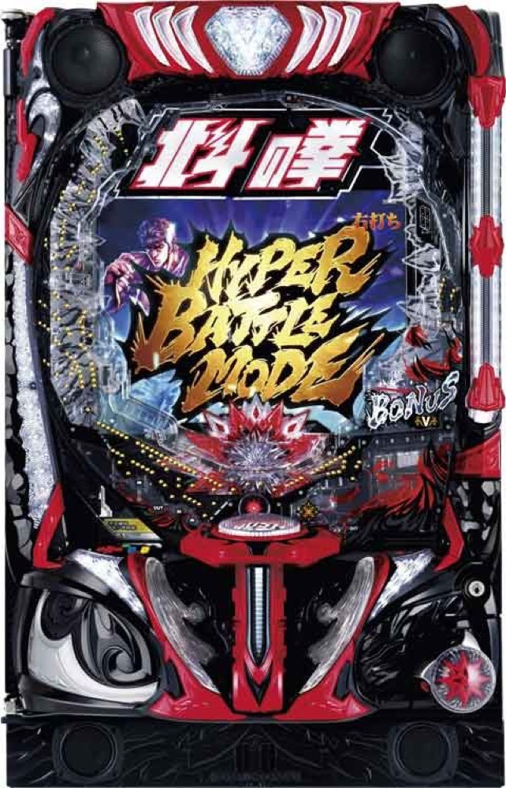

e北斗の拳10
約80%のBATTLE MODEから、約89%のHYPERへ。
- 導入
- 2024年8月
- メーカー
- Sammy
- 分類
- パチンコ
主要スペック
大当り約1/348.6、BATTLE MODE突入・継続とも約80%、上位HYPER継続約89%のバトルスペックを簡易体験できます。
- 大当り約1/348.6
- BATTLE MODE突入・継続約80%
- HYPER継続約89%
e北斗の拳10の見どころと計算条件
大当り約1/348.6、BATTLE MODE突入・継続とも約80%、上位HYPER継続約89%のバトルスペックを簡易体験できます。
e北斗の拳10を数字で早分かり
結果では表記出玉と実獲得出玉を分け、250玉貸し・28玉交換の固定条件で差玉と収支を計算します。
突入・継続とも約80%
図柄揃いは約1/348.6。初当りの約80%でBATTLE MODEへ進み、下位状態も約80%で継続します。
転落抽選は1回ごとの継続判定へまとめています。
無想転生チャンスからHYPERへ
右打ち中大当りの一部で無想転生チャンスへ進み、成功すると継続約89%のHYPER BATTLE MODEへ昇格します。
シミュレーターでは代表的な昇格抽選として簡易化します。
固定レートと収支の条件
- 17.0回/1,000円・250玉貸し・28玉交換で固定
- 平均図柄揃い投資目安は約20,500円
- 結果は自動でマイ記録へ保存
平均回転と投資目安の計算
通常時の図柄揃い確率は約1/348.6です。当サイトでは、1,000円あたり17回転という機種別の固定条件を使い、平均投資目安を「348.6 ÷ 17 × 1,000円」で計算します。この条件では約20,500円が平均投資の目安です。
通常ヘソ、250玉貸し・28玉交換で固定し、BATTLE MODE突入率80%と継続率80%を簡易抽選します。表記出玉とは別に、打ち出しとオーバー入賞を簡易反映した実獲得出玉を収支へ使用します。平均値は長期間の理論上の目安であり、1回ごとの結果や実際の遊技収支を保証するものではありません。
シミュレーション結果の見方
当るまで図柄揃いまでの回転数と投資目安
RUSHBATTLE MODEへの突入と連チャン回数
出玉表記出玉と、打ち出しを反映した実獲得出玉
最終収支実獲得出玉を28玉交換で換算した収支目安
結果は自動で「マイ記録」に保存され、同じ機種を何回試したか、最高収支、勝率をあとから確認できます。
簡易シミュレーターについて
図柄揃い・BATTLE MODE・出玉の流れを固定条件で体験できます。JavaScriptを有効にすると、この位置にシミュレーター、演出、マイ記録、機種別ランキングが表示されます。
結果は娯楽・確率理解のための参考表示です。金銭的価値や交換価値はなく、実際の勝敗や収支を保証しません。18歳未満の方の利用はお控えください。
e北斗の拳10のよくある質問
e北斗の拳10はどんな台？
大当り約1/348.6、BATTLE MODE突入・継続とも約80%、上位HYPER継続約89%のバトルスペックを簡易体験できます。 大当り約1/348.6が主な確認ポイントです。
e北斗の拳10の平均投資目安は？
当サイトの固定条件では1,000円あたり17回転として、平均20,500円が目安です。実店舗の回転率や持ち玉状況で変わるため、実収支を保証する値ではありません。
シミュレーターでは何を体験できる？
図柄揃いまでの回転数、BATTLE MODEへの突入、連チャンと出玉、さらにHYPER BATTLE MODEを固定条件で簡易抽選します。実機の全演出や内部状態を完全再現するものではありません。
出玉と収支はどう計算する？
スペック上の表記出玉とは別に、打ち出しロスとオーバー入賞を簡易反映した実獲得出玉を算出します。250玉貸し・28玉交換の固定条件で差玉と収支目安を表示します。